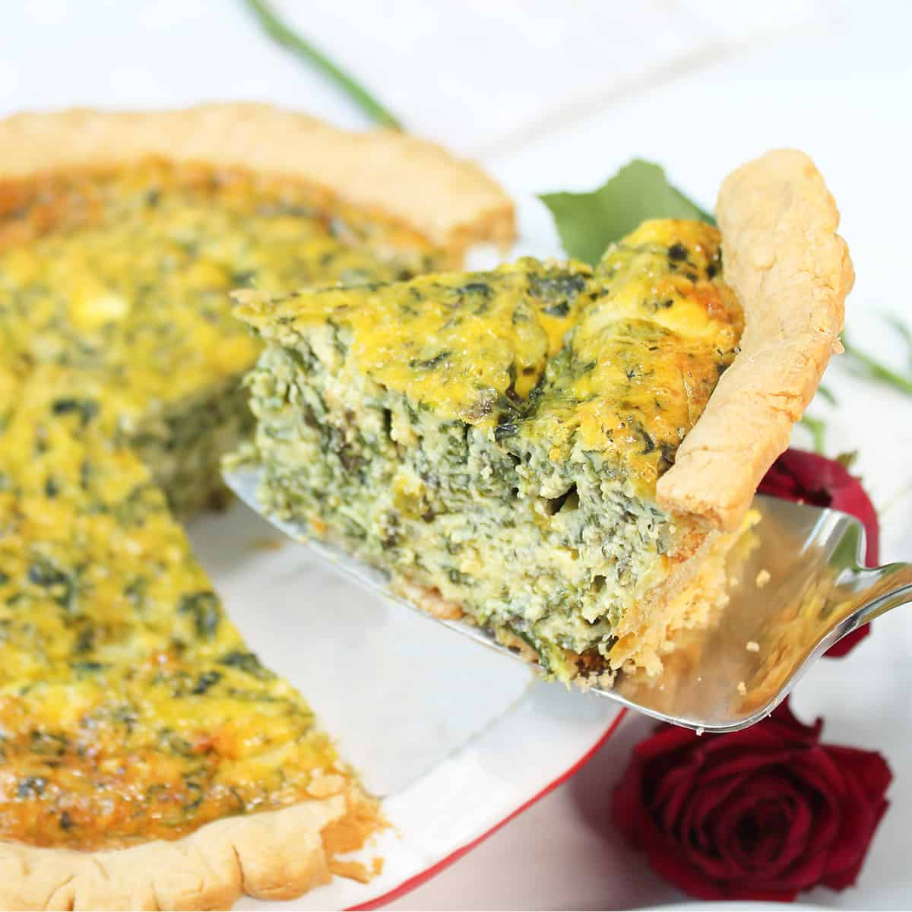

Light and Fluffy Spinach Quiche
This easy spinach quiche recipe is tasty, fluffy, and easy to prepare. You'll love it. The spinach can be substituted for any fresh or frozen vegetable.
Ingredients
- 1/2 cup light mayonnaise
- 1/2 cup milk
- 4 large eggs, lightly beaten
- 10oz of zpinach, squeezed dry
- 8oz shredded cheddar cheese
- 1/4 cup chopped onions
- 1 unbacked pie shell
Instructions
- Preheat the oven to 400 degrees F (200 degrees C). Line a cookie sheet with foil.
- MWhisk together mayonnaise and milk in a large bowl until smooth. Whisk in eggs; set aside.
- Layer spinach, cheese, and onion in the pie shell, making several layers of each. Place on the prepared cookie sheet. Slowly pour egg mixture into the pie shell, then cover quiche with foil.
- Bake in the preheated oven for 45 minutes. Uncover and continue baking until the top is golden brown and filling is set, 10 to 15 more minutes.
No soggy bottom! No dry or spongy custard! Just the creamy, fluffy, eggy pie of your dreams. It's a step so important I must state the obvious: Before you even start rolling out your dough, preheat the oven. Quiche bake at lower temperatures (more on that later), but the crust needs to go into a really hot oven for par-baking, so crank it up to 425° F.
Odin's Recipes